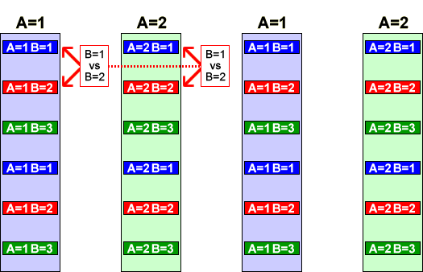

Interaction sum of squares
The diagram below shows the full hierarchy of models that underly a complete analysis of variance table for one factor (A) that is varied at block level and another (B) that is varied within blocks. Each black arrow corresponds to a sum of squares in the analysis of variance table.
Neither A nor B affect Y and all blocks same
|
 |
(sum of squares for testing factor A) |
|
| A affects Y (all blocks same) |
|
| The blocks differ (and A may affect Y) |
|
(sum of squares for testing factor B) |
|
| The blocks differ (and A may affect Y) and B affects Y |
|
(sum of squares for testing interaction) |
|
| The blocks differ and A and B interact in their effect on Y |
The last arrow corresponds to the sum of squares that is the numerator of the F-ratio for testing whether there is any interaction between A and B.
Significance of the interaction sum of squares
The two pairs of red arrows at the top of the diagram below give information about the effect of changing factor B from level 1 to 2 when factor A is at level 1 and when it is at level 2. Interaction occurs when these two effects are different.

Since this involves two differences within blocks, the block effect is cancelled. Only the variation within blocks therefore affects the significance of the interaction.
The interaction sum of squares should therefore be compared to the residual (sub-plot) sum of squares to test whether there is any interaction.
Maize seed planting
The analysis of variance table below is initially the same as that on the previous page.
Click the two checkboxes to use the two factors (and their interaction) to explain variation at full-plot and sub-plot levels.
Observe that the sum of squares for interaction between the seedbed preparation method and the planting method is explained at sub-plot level. From its p-value (0.1988), we would conclude that there is no evidence of interaction between the effects of the two factors.